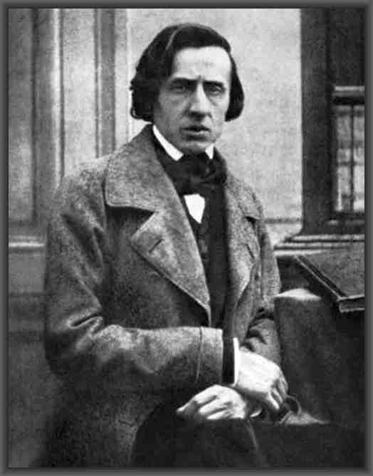

Frederic Chopin nace el 1er de marzo de 1810 en Zelazowa Wola en Mazovia (Polonia). Sus padres compran un piano, instrumento de moda a esa época y Chopin se revela ser precoz. A partir de su más tierna infancia, compone sus primeras obras apenas 7 años y ya 2 polocas, y toca frente a la madre del Zar. En 1826, después de sus años en la preparatoria, ingresa en el conservatorio de música de Varsovia. Será invitado a los salones más prestigiosos de Varsovia. A 20 años, ya ha compuesto como unas cincuenta obras.
